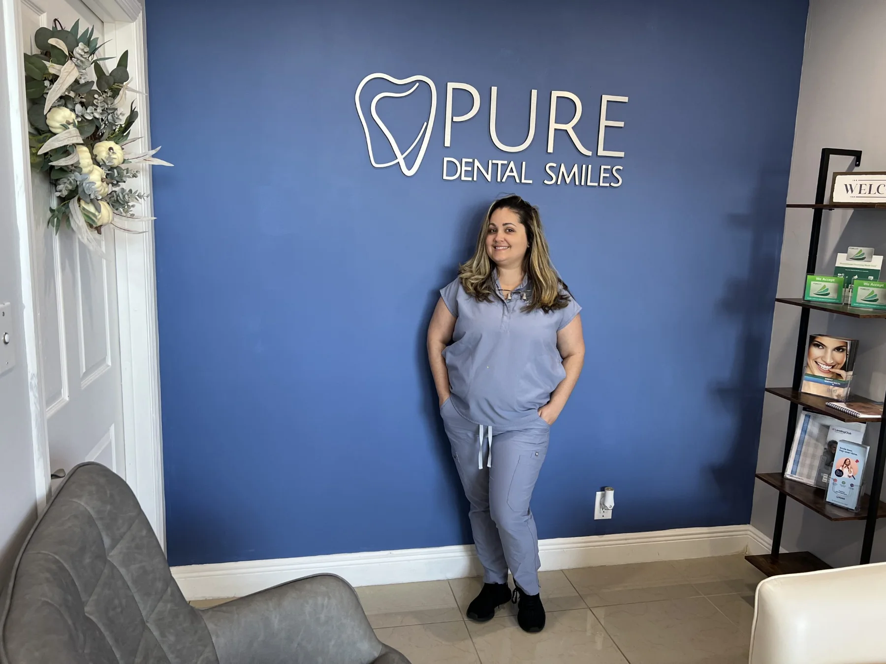
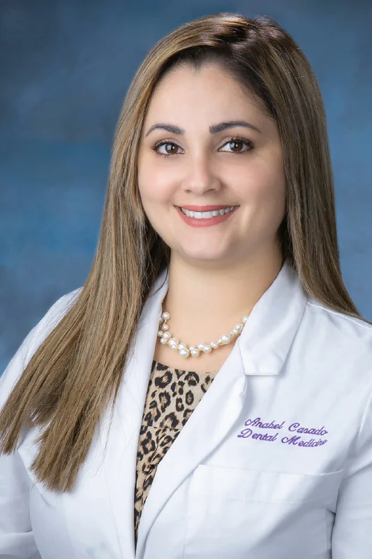

Odontología cosmética
Una sonrisa más pareja y más clara. Un diente astillado muchas veces se repara en una sola visita con bonding.
- Carillas
- Bonding
- Blanqueamiento KoR y ZOOM
- Invisalign
- Rellenos dérmicos
Odontología familiar y cosmética en North Miami Beach. Atención en español e inglés, con presupuesto escrito antes de empezar.

La Dra. Anabel Casado, en nuestra recepción.
Desde una limpieza hasta un tratamiento de implantes, con la misma dentista y un presupuesto escrito antes de comenzar.
Una sonrisa más pareja y más clara. Un diente astillado muchas veces se repara en una sola visita con bonding.
Implantes individuales, múltiples y All-on-4, con injertos óseos cuando el hueso lo necesita. Todo empieza con un examen e imágenes 3D.
Un dolor de muela, una corona rota o un empaste perdido no deberían esperar a la semana próxima.
Llamar ahora
¡Hola! Soy la Dra. Anabel Casado y ejerzo en Pure Dental Smiles, en North Miami Beach. Me encanta este trabajo porque conozco gente nueva todos los días y veo cuánto mejor se ve nuestra comunidad cuando sonríe.
Obtuve mi título de DMD en la Nova Southeastern University College of Dental Medicine en 2020, después de cursar mi carrera de grado en Florida International University, y desde entonces ejerzo en Florida.
Brindo atención integral a adultos y niños: exámenes y limpiezas, empastes, coronas, carillas y puentes, tratamientos de conducto, extracciones quirúrgicas, injertos óseos, dentaduras parciales y completas, sobredentaduras con broches, reconstrucción de boca completa e implantes dentales, incluido All-on-4.
Mi objetivo es sencillo. Todas las personas merecen una buena atención dental sin importar lo que puedan pagar, por eso uso materiales de calidad a un precio justo y le digo cuánto cuesta el tratamiento antes de comenzar. Quiero que se sienta cómodo durante la cita y seguro de cómo cuidar sus dientes después.
Atiendo en inglés y en español, y Pure Dental Smiles recibe con gusto a pacientes de todos los orígenes e identidades de género.
Sin sorpresas: usted sabe qué se hará y cuánto cuesta antes de empezar.
Le explicamos lo que encontramos, le mostramos sus opciones con el costo de cada una y usted decide.
Usted ve a la Dra. Casado en todas sus citas, no a quien esté de turno.
La doctora consulta en ambos idiomas, para que nada de su diagnóstico ni de sus opciones se pierda en la traducción.
Llame por la mañana y haremos lo posible por atenderle ese mismo día.
Si lo necesita, puede repartir el costo de su tratamiento en el tiempo.
“Finalmente después de varias clínicas mediocres encontré la mejor dentista que he tenido. Tres coronas perfectas sin ningún problema. La profesionalidad y experiencia se puede observar desde que empezamos el tratamiento. Es increíble poder disfrutar de las comidas otra vez. Todo el staff es bien nice, lo recomiendo cien por ciento. Gracias en especial a la doctora Anabel Casado.”
“I just left pure Dental smiles and I just want to say how wonderful the entire staff is. The dentist, one of the most compassionate, loving person I have ever met in my entire life ❤️ ♥️ 💖 💕”
“I enjoy the dental smile very nice place”
Reseñas publicadas en Google, tal como fueron escritas.
Llámenos o escríbanos un texto al (305) 932-6600 y haremos lo posible por verle hoy.
Abrimos los sábados a pedido y no con un horario fijo. Cuando suficientes pacientes necesitan una cita de fin de semana, la Dra. Casado abre el consultorio ese sábado. Llame al (305) 932-6600 o envíenos un mensaje: le daremos la próxima fecha disponible o le anotaremos para la siguiente.
Sí, y normalmente en una sola visita. Para una astilla pequeña, la Dra. Casado puede reconstruir el diente con bonding de resina del mismo tono que su esmalte natural. Las astillas más grandes pueden necesitar una carilla o una corona. Venga a un examen y le diremos cuál opción conviene antes de hacer cualquier trabajo.
Sí. La Dra. Casado está certificada en implantes dentales por la International Academy of Dental Implantology y coloca implantes individuales, múltiples y restauraciones de arcada completa All-on-4, además de injertos óseos cuando la mandíbula necesita reforzarse primero. El tratamiento comienza con un examen e imágenes 3D para confirmar que hay hueso suficiente para sostener el implante.
Sí. La Dra. Casado realiza dentaduras completas y parciales, sobredentaduras sobre implantes y reparaciones y rebases el mismo día de dentaduras que ya tenga. Si necesita reemplazar varios dientes, le explicaremos las diferencias de costo, comodidad y duración entre dentaduras, un puente e implantes para que usted elija.
Sí. Los dentistas con licencia en Florida pueden recetar antibióticos, que se usan con frecuencia en abscesos dentales y en algunas infecciones después de una cirugía oral. El antibiótico trata la infección pero no su causa, por eso se receta junto con un tratamiento como drenaje, un conducto o una extracción, y no en su lugar. Si tiene hinchazón en la cara, fiebre o dificultad para tragar o respirar, trátelo como una emergencia y busque atención de inmediato.
Lunes, miércoles, jueves y viernes: 9:00 AM - 5:00 PM
Sábado: solo con cita
Domingo: cerrado